Completed dominance-enhanced MWIS campaign and matched CSP inputs. Original MWIS excluded. Logical dimensions only; runtime is descriptive with unmatched hardware/environment provenance. Click any figure for its vector PDF. See README.md and the exported tables for full definitions.
04_logical_qubo_dimensions
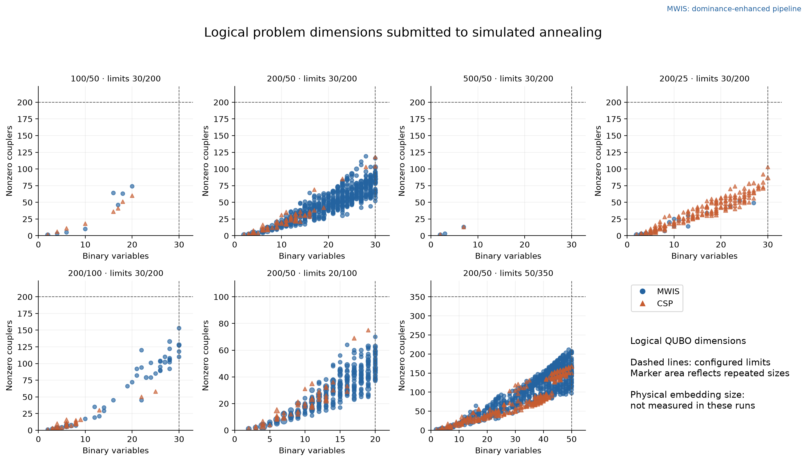
MWIS uses the dominance-enhanced pipeline. Binary variables and nonzero quadratic couplers for sampled terminals. Repeated (variables, couplers) pairs are aggregated; marker area increases with frequency. These are logical dimensions, not physical qubits, chains, chain lengths or embedding overhead. No hardware embedding was performed.
07_sampling_and_decomposition
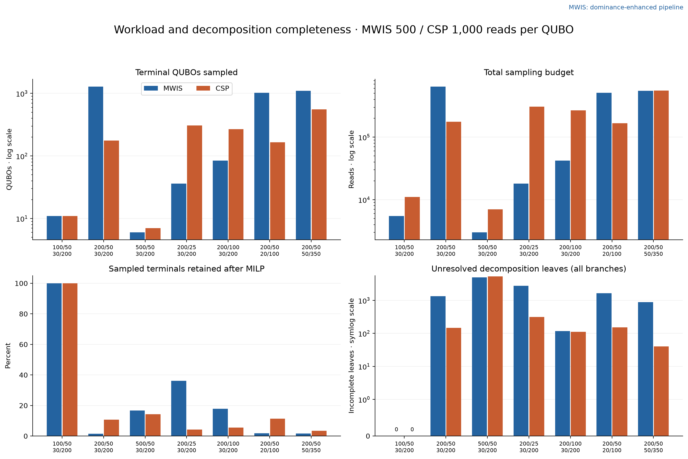
MWIS uses the dominance-enhanced pipeline. Counts include all alternative branches exported as non-empty terminal QUBOs. Total reads are summed from actual annealing_results.csv rows; per-terminal budgets are 500 for MWIS and 1,000 for CSP. Retention uses final terminal IDs, not contact counts. Incomplete leaves are all unresolved branches, not the count selected in the final schedule; zero is kept explicitly.
08_component_structure
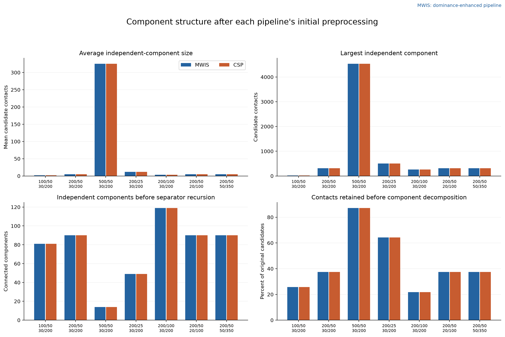
MWIS uses the dominance-enhanced pipeline. Component sizes use candidate contacts in both methods, rather than CSP satellite variables versus MWIS contact vertices. Both pipelines have applied global dominance. Means include singleton components, so the largest component is shown alongside them. These are root components before recursive separator decomposition, not terminal QUBOs or incomplete leaves.
10_pre_post_milp_provenance
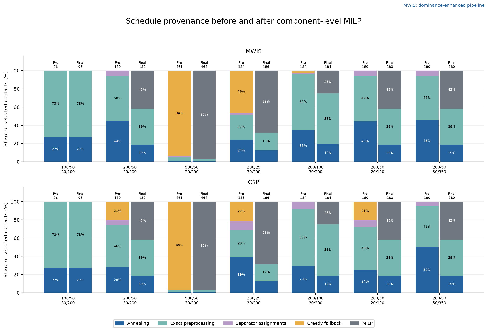
MWIS uses the dominance-enhanced pipeline. Paired bars show provenance of selected contacts before and after MILP; numbers above bars are actual contact counts. Each stage has its own denominator because schedule cardinality may change. These are provenance shares, not identities carried forward: MILP replaces a component solution and can select different contacts. Full pre/post counts and weights are exported in comparison_metrics.csv.
11_terminal_profile_cost_quality
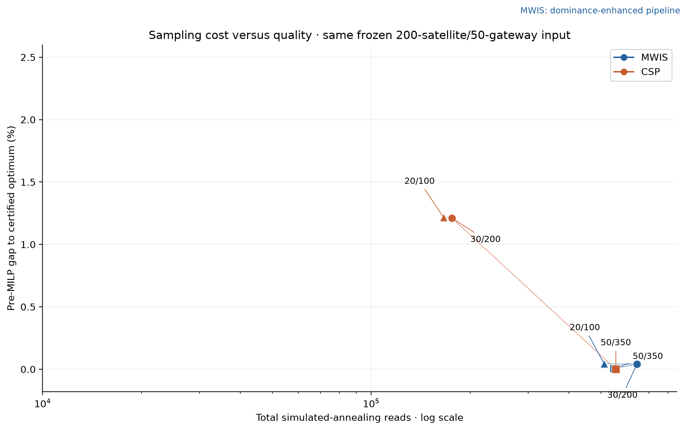
MWIS uses the dominance-enhanced pipeline. Only the terminal-sensitivity profiles on the identical frozen 200/50 input are compared. Labels are logical variable/coupler limits. Total reads measure sampling workload, excluding classical reduction/decomposition/verification cost. Per-terminal budgets differ (MWIS 500, CSP 1,000), and changing both caps changes the decomposition itself; this is an observed profile tradeoff, not an isolated effect of increasing reads or a runtime Pareto claim.
12_leaf_size_distributions
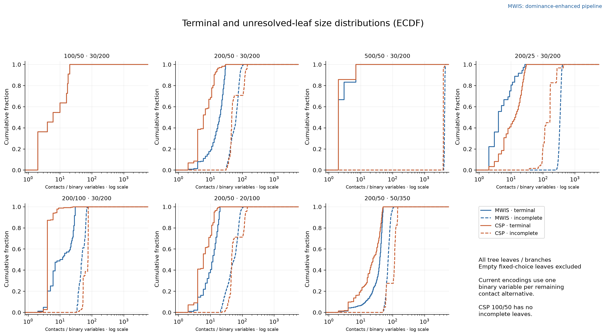
MWIS uses the dominance-enhanced pipeline. Empirical cumulative distributions over all recorded non-empty terminal leaves and incomplete leaves, including alternative separator states; these are workload distributions, not repeated-run uncertainty. Sizes are remaining candidate contacts/binary variables, excluding fixed choices. In the current one-hot/domain-wall encodings one bit is used per contact alternative. Common logarithmic x limits expose large unresolved pieces concealed by average terminal size. Missing incomplete leaves are not plotted as zero-sized observations. Couplers missing in CSP incomplete-leaf metadata remain blank in leaf_metrics.csv.
Schedule Gantt charts and gateway activity for each configuration
13_schedule_gantt_s100_g50
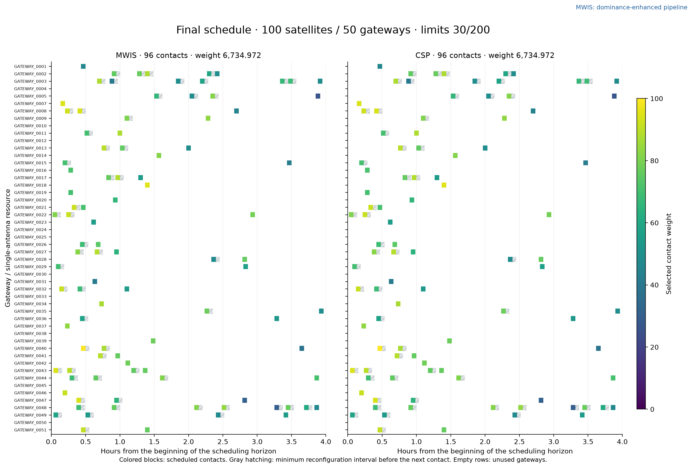
MWIS uses the dominance-enhanced pipeline. Matched final MWIS/CSP schedules for 100/50, terminal limits 30/200. Both panels use the same gateway order and frozen four-hour horizon. Contact colors share the 0–100 operational-weight scale. Required setup intervals are drawn only between successive selected contacts, excluding a trailing reservation after the last contact. Empty gateways remain visible. Equal objectives need not imply identical contact choices or timings. This is the simplified single-antenna, at-most-one-contact-per-satellite model.
14_gateway_contacts_s100_g50
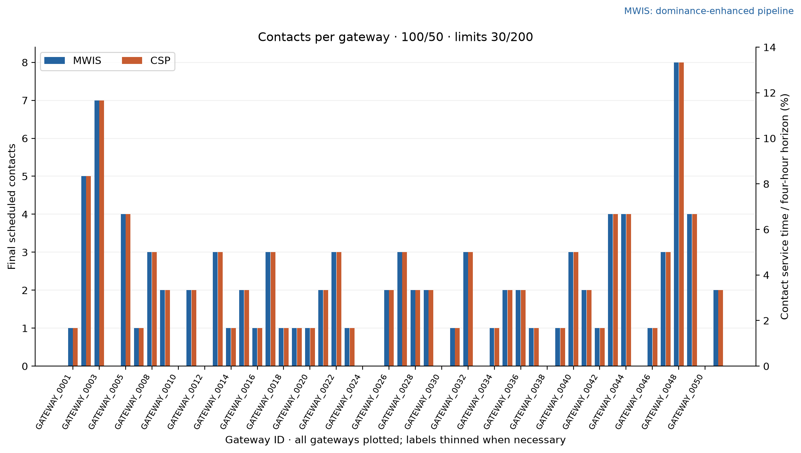
MWIS uses the dominance-enhanced pipeline. Final selected contacts per gateway for 100/50, limits 30/200. Zero-contact gateways remain included. Since every selected contact lasts four minutes and each station has one antenna, the right axis converts counts to service occupancy over the four-hour horizon. Occupancy excludes setup, visibility availability and idle time; low occupancy is constrained by the one-contact-per-satellite model and is not a measurement of real Starlink network efficiency. Contact counts, minutes, weight and occupancy for every gateway are exported in gateway_metrics.csv.
13_schedule_gantt_baseline
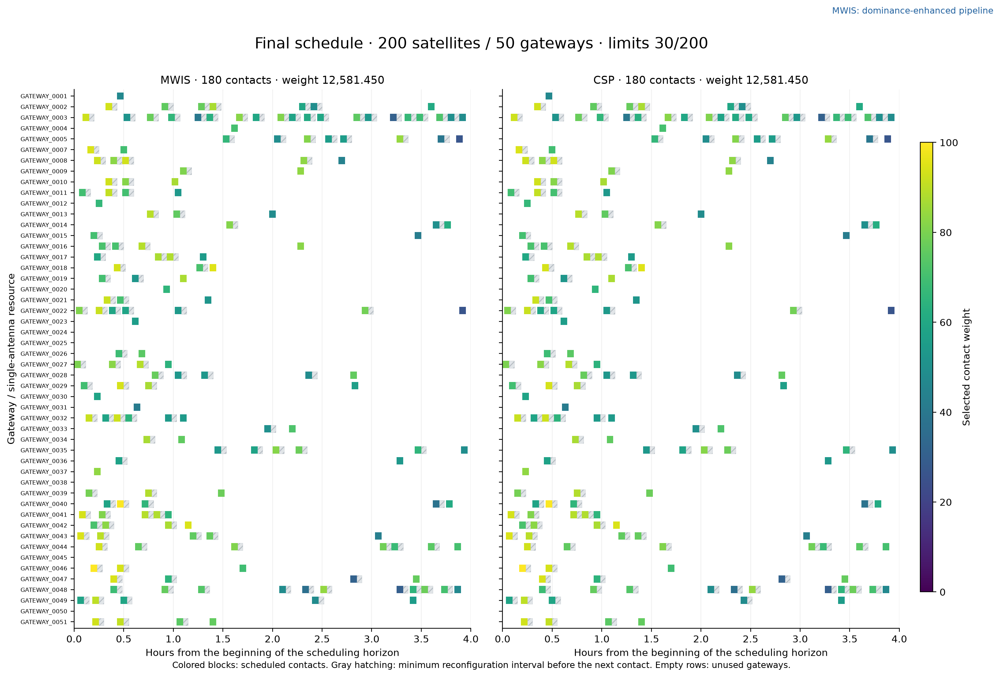
MWIS uses the dominance-enhanced pipeline. Matched final MWIS/CSP schedules for 200/50, terminal limits 30/200. Both panels use the same gateway order and frozen four-hour horizon. Contact colors share the 0–100 operational-weight scale. Required setup intervals are drawn only between successive selected contacts, excluding a trailing reservation after the last contact. Empty gateways remain visible. Equal objectives need not imply identical contact choices or timings. This is the simplified single-antenna, at-most-one-contact-per-satellite model.
14_gateway_contacts_baseline
MWIS uses the dominance-enhanced pipeline. Final selected contacts per gateway for 200/50, limits 30/200. Zero-contact gateways remain included. Since every selected contact lasts four minutes and each station has one antenna, the right axis converts counts to service occupancy over the four-hour horizon. Occupancy excludes setup, visibility availability and idle time; low occupancy is constrained by the one-contact-per-satellite model and is not a measurement of real Starlink network efficiency. Contact counts, minutes, weight and occupancy for every gateway are exported in gateway_metrics.csv.
13_schedule_gantt_s500_g50
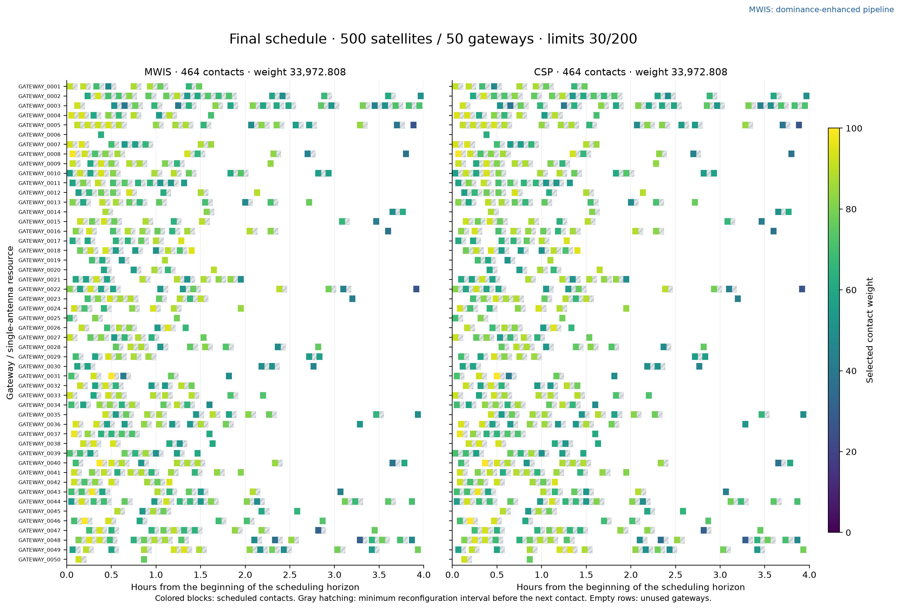
MWIS uses the dominance-enhanced pipeline. Matched final MWIS/CSP schedules for 500/50, terminal limits 30/200. Both panels use the same gateway order and frozen four-hour horizon. Contact colors share the 0–100 operational-weight scale. Required setup intervals are drawn only between successive selected contacts, excluding a trailing reservation after the last contact. Empty gateways remain visible. Equal objectives need not imply identical contact choices or timings. This is the simplified single-antenna, at-most-one-contact-per-satellite model.
14_gateway_contacts_s500_g50
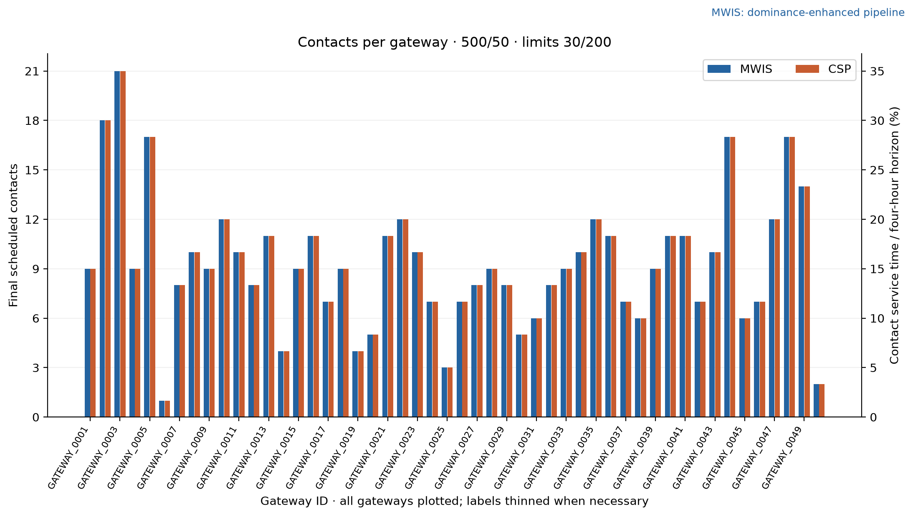
MWIS uses the dominance-enhanced pipeline. Final selected contacts per gateway for 500/50, limits 30/200. Zero-contact gateways remain included. Since every selected contact lasts four minutes and each station has one antenna, the right axis converts counts to service occupancy over the four-hour horizon. Occupancy excludes setup, visibility availability and idle time; low occupancy is constrained by the one-contact-per-satellite model and is not a measurement of real Starlink network efficiency. Contact counts, minutes, weight and occupancy for every gateway are exported in gateway_metrics.csv.
13_schedule_gantt_s200_g25
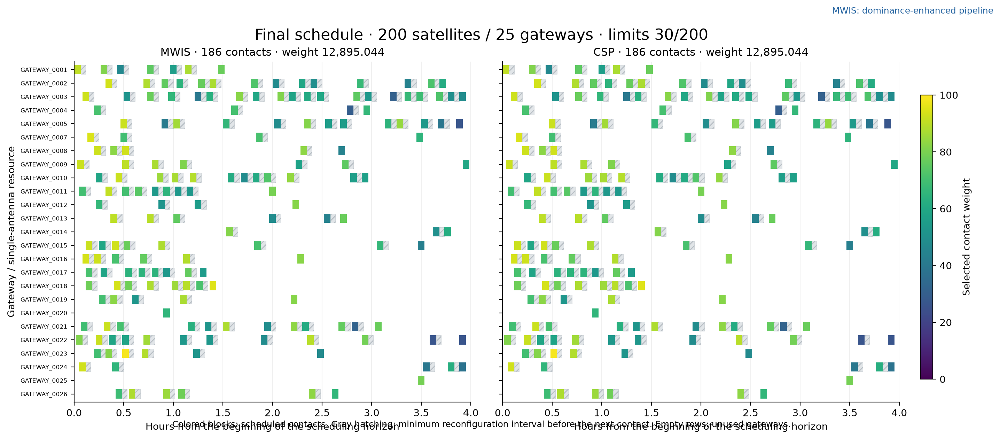
MWIS uses the dominance-enhanced pipeline. Matched final MWIS/CSP schedules for 200/25, terminal limits 30/200. Both panels use the same gateway order and frozen four-hour horizon. Contact colors share the 0–100 operational-weight scale. Required setup intervals are drawn only between successive selected contacts, excluding a trailing reservation after the last contact. Empty gateways remain visible. Equal objectives need not imply identical contact choices or timings. This is the simplified single-antenna, at-most-one-contact-per-satellite model.
14_gateway_contacts_s200_g25
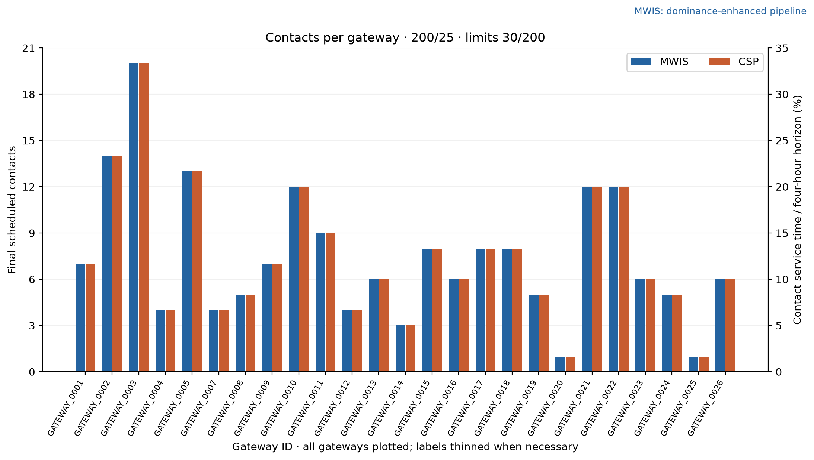
MWIS uses the dominance-enhanced pipeline. Final selected contacts per gateway for 200/25, limits 30/200. Zero-contact gateways remain included. Since every selected contact lasts four minutes and each station has one antenna, the right axis converts counts to service occupancy over the four-hour horizon. Occupancy excludes setup, visibility availability and idle time; low occupancy is constrained by the one-contact-per-satellite model and is not a measurement of real Starlink network efficiency. Contact counts, minutes, weight and occupancy for every gateway are exported in gateway_metrics.csv.
13_schedule_gantt_s200_g100
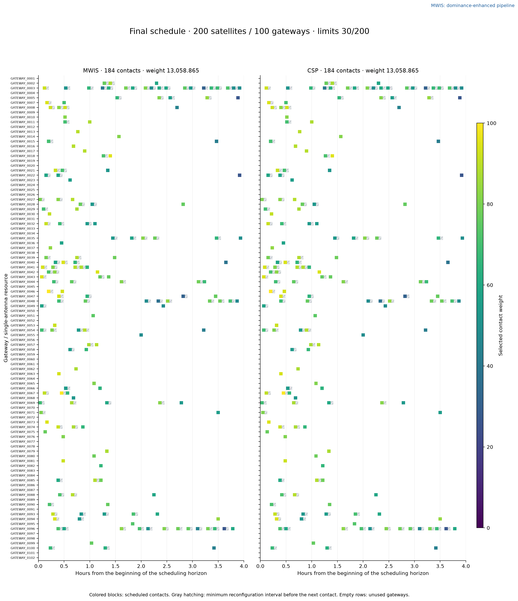
MWIS uses the dominance-enhanced pipeline. Matched final MWIS/CSP schedules for 200/100, terminal limits 30/200. Both panels use the same gateway order and frozen four-hour horizon. Contact colors share the 0–100 operational-weight scale. Required setup intervals are drawn only between successive selected contacts, excluding a trailing reservation after the last contact. Empty gateways remain visible. Equal objectives need not imply identical contact choices or timings. This is the simplified single-antenna, at-most-one-contact-per-satellite model.
14_gateway_contacts_s200_g100
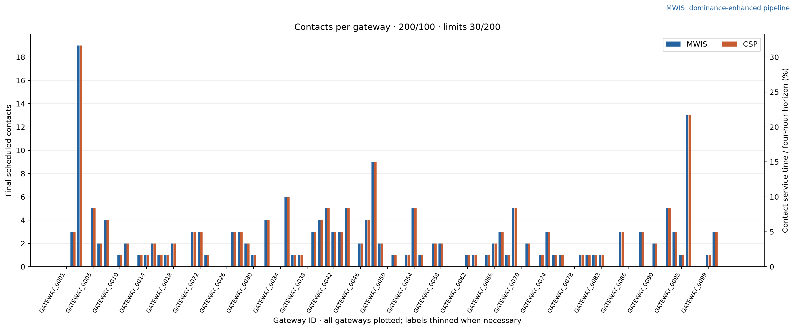
MWIS uses the dominance-enhanced pipeline. Final selected contacts per gateway for 200/100, limits 30/200. Zero-contact gateways remain included. Since every selected contact lasts four minutes and each station has one antenna, the right axis converts counts to service occupancy over the four-hour horizon. Occupancy excludes setup, visibility availability and idle time; low occupancy is constrained by the one-contact-per-satellite model and is not a measurement of real Starlink network efficiency. Contact counts, minutes, weight and occupancy for every gateway are exported in gateway_metrics.csv.
13_schedule_gantt_n20_c100
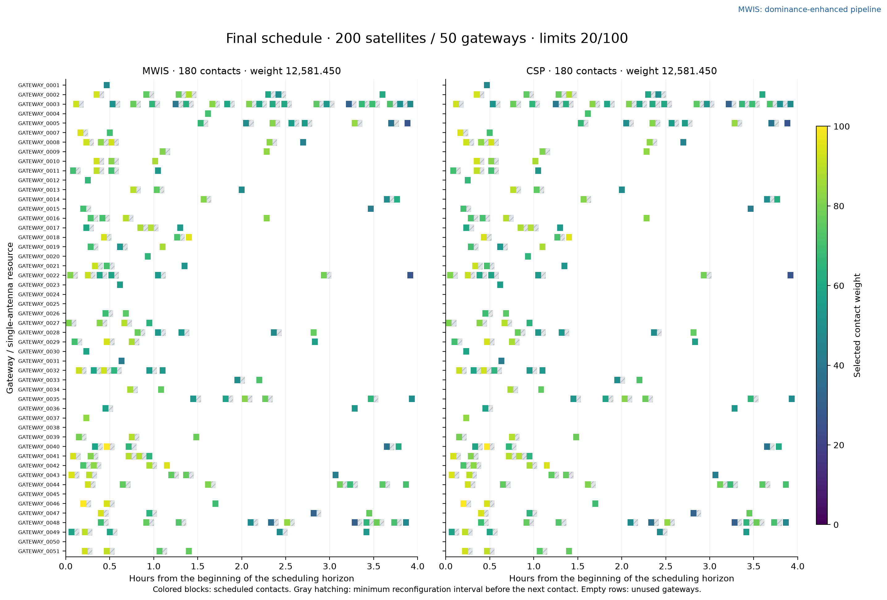
MWIS uses the dominance-enhanced pipeline. Matched final MWIS/CSP schedules for 200/50, terminal limits 20/100. Both panels use the same gateway order and frozen four-hour horizon. Contact colors share the 0–100 operational-weight scale. Required setup intervals are drawn only between successive selected contacts, excluding a trailing reservation after the last contact. Empty gateways remain visible. Equal objectives need not imply identical contact choices or timings. This is the simplified single-antenna, at-most-one-contact-per-satellite model.
14_gateway_contacts_n20_c100
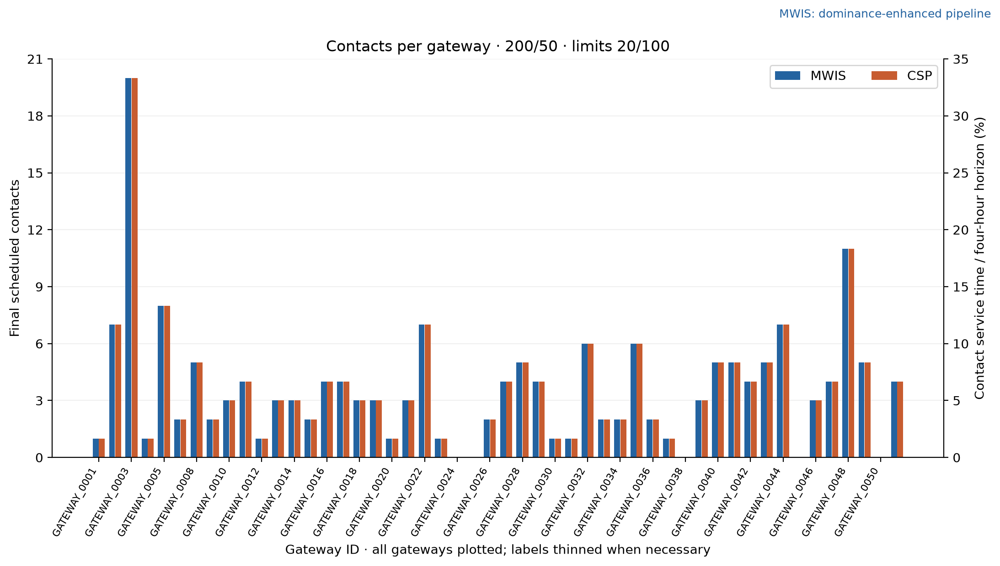
MWIS uses the dominance-enhanced pipeline. Final selected contacts per gateway for 200/50, limits 20/100. Zero-contact gateways remain included. Since every selected contact lasts four minutes and each station has one antenna, the right axis converts counts to service occupancy over the four-hour horizon. Occupancy excludes setup, visibility availability and idle time; low occupancy is constrained by the one-contact-per-satellite model and is not a measurement of real Starlink network efficiency. Contact counts, minutes, weight and occupancy for every gateway are exported in gateway_metrics.csv.
13_schedule_gantt_n50_c350
MWIS uses the dominance-enhanced pipeline. Matched final MWIS/CSP schedules for 200/50, terminal limits 50/350. Both panels use the same gateway order and frozen four-hour horizon. Contact colors share the 0–100 operational-weight scale. Required setup intervals are drawn only between successive selected contacts, excluding a trailing reservation after the last contact. Empty gateways remain visible. Equal objectives need not imply identical contact choices or timings. This is the simplified single-antenna, at-most-one-contact-per-satellite model.
14_gateway_contacts_n50_c350
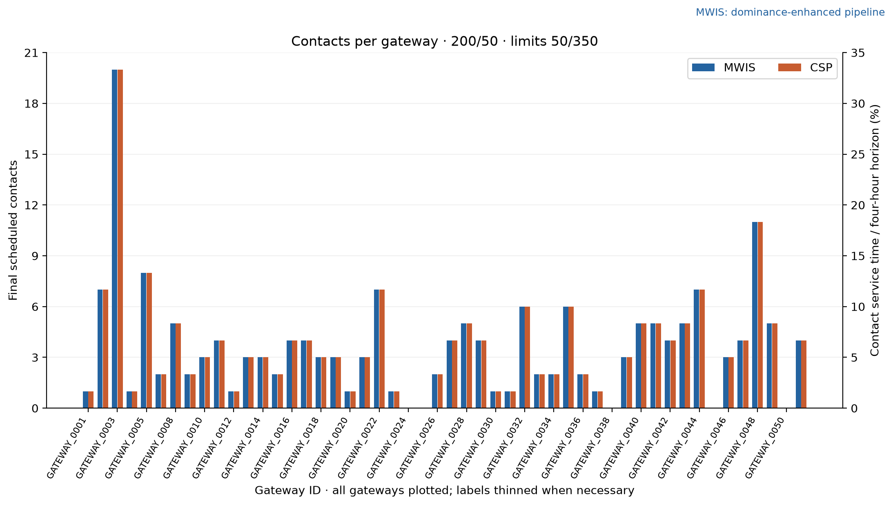
MWIS uses the dominance-enhanced pipeline. Final selected contacts per gateway for 200/50, limits 50/350. Zero-contact gateways remain included. Since every selected contact lasts four minutes and each station has one antenna, the right axis converts counts to service occupancy over the four-hour horizon. Occupancy excludes setup, visibility availability and idle time; low occupancy is constrained by the one-contact-per-satellite model and is not a measurement of real Starlink network efficiency. Contact counts, minutes, weight and occupancy for every gateway are exported in gateway_metrics.csv.